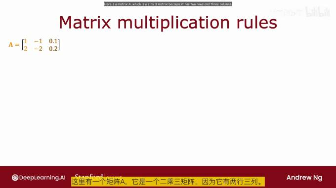
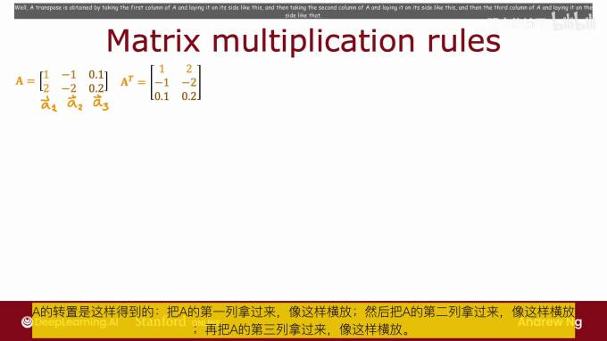
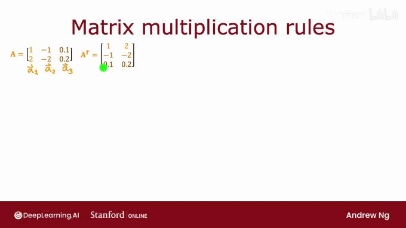
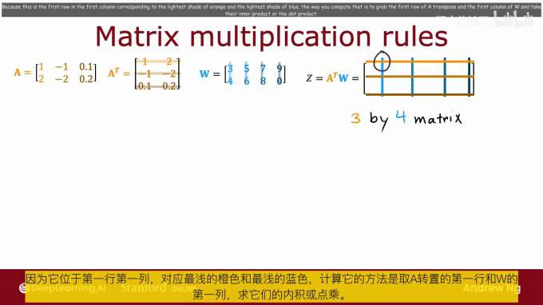
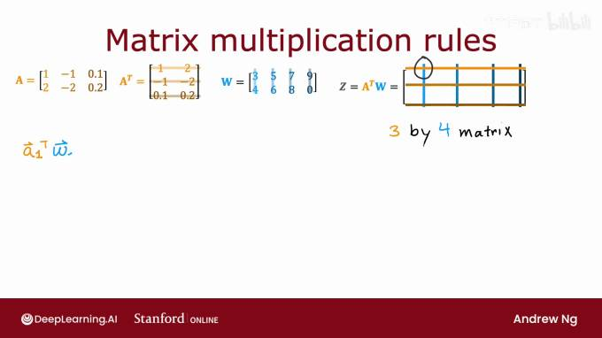
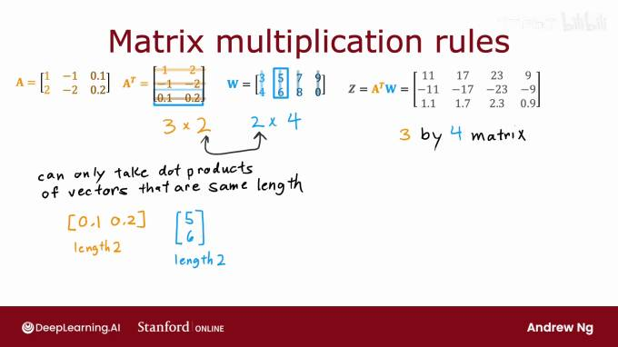

00:03我们来了解一下两个矩阵相乘的一般形式。
00:09然后在下个视频中，我们将把这个方法应用到神经网络的向量化实现上。
00:19这里有一个矩阵 A，它是一个二乘三矩阵，因为它有两行三列。

00:28和之前一样，我鼓励你把这个矩阵的列看作三个向量，向量 A 一、A 二和 A 三。
00:39我们要做的是取 A 的转置，然后与一个矩阵 W 相乘。
00:49A 的转置是这样得到的：把 A 的第一列拿过来，像这样横放；然后把 A 的第二列拿过来，像这样横放；再把 A 的第三列拿过来，像这样横放。


01:04所以这些行现在就变成了 A 一转置、A 二转置和 A 三转置。
01:15我鼓励你把 W 看作是向量 W 一、W 二、W 三和 W 四这样堆叠在一起。
01:25我们来看看如何计算 A 转置乘以 W。
01:30注意，我也用了深浅稍有不同的橙色来表示 A 的不同列，相同深浅的颜色对应我们认为组合成一个向量的数字。
01:44并且相同的颜色也用来表示 A 转置的不同行，因为 A 转置的不同行就是 A 一转置、A 二转置和 A 三转置。
01:56类似地，我用不同深浅的蓝色来表示 W 的不同列，因为同一蓝色深浅的数字是组合在一起形成向量 W 一、W 二、W 三或 W 四的。
02:13现在，我们来看看如何计算 A 转置乘以 W。
02:19我将用不同深浅的蓝色画竖条，用不同深浅的橙色画横条，来标示 Z（即 A 转置 W）中的哪些元素。
02:31是受 A 转置不同行的影响，哪些是受 W 不同列的影响。
02:44举个例子，我们来看看 W 的第一列。
02:48这就是 W 一，在这里用最浅的蓝色标出。
02:54所以 W 一将会影响或者对应用这里最浅蓝色标示的 Z 的第一列。
03:06而 W 的第二列，即 W 二，用第二浅的蓝色标出，会影响 Z 的第二列计算出的值，以此类推第三、第四列。
03:23相应地，我们来看看 A 转置。
03:26A 一转置是 A 转置的第一行，用最浅的橙色标出，A 一转置会影响或者对应用 Z 的第一行的值。
03:40A 二转置会影响 Z 的第二行，A 三转置会影响或者对应用 Z 的第三行。
03:51我们来弄清楚如何计算矩阵 Z，它将是一个三乘四的矩阵，总共有十二个数字。
04:00我们先来弄清楚如何计算 Z 中第一行第一列的数字。
04:12因为它位于第一行第一列，对应最浅的橙色和最浅的蓝色，计算它的方法是取 A 转置的第一行和 W 的第一列，求它们的内积或点乘。


04:28所以这个数字就是（一，二）点乘（三，四），也就是一乘三加二乘四，等于十一。
04:41找再省第一1例。
04:43怎么计算这个2的元素呢？
04:49它在第三行，第一行、第二行、第三行。
04:54所以这是第三行，第二列，第一列、第二列。
04:59所以要计算乙的第三行第二列的数字，你现在就要取 A 转置的第三行和 W 的第二列，把它们点乘起来。
05:14注意，这对应最深的橙色和第二浅的蓝色。
05:20计算过程是，零点一乘五加零点二乘六，等于零点五加一点二，等于一点七。
05:33所以要计算乙的第三行第二列的数字，你就取 A 转置的第三行和 W 的第二列。
05:43我们再来看一个例子，看看你能不能自己算出来。
05:49这是矩阵乙的第二行第三列。
05:56你不妨看一下，看看能否找出应该取哪一行和哪一列进行点乘，从而得出这个矩阵元素中的数字。
06:08希望你明白了，应该取 A 转置的第二行和 W 的第三列。
06:16当你把它们点乘起来，A 二转置点乘 W 三等于负一乘七加负二乘八，等于负七加负十六，结果是负二十三。
06:31这样你就计算出了矩阵乙的这个元素。
06:35事实证明，如果你对矩阵乙的每个元素都这样操作，你就能算出这个矩阵中的所有数字，结果看起来是这样的。
06:45如果你想的话，可以暂停视频，随便选一个元素，验证一下我们讲的公式能得到正确的乙值。
06:55我只想指出矩阵相乘的最后一个有趣要求，这里的 X 转置是一个三乘二矩阵，因为它有三行两列。
07:10而这里的 W 是一个二乘四矩阵，因为它有两行四列。
07:17两个矩阵能相乘的一个要求是，这个数字必须和那个数字匹配。
07:25这是因为你只能在长度相同的向量之间进行点乘。
07:32所以你可以对包含两个数字的向量做点乘。
07:36那是因为你只能用一个长度为二的向量和另一个长度也为二的向量求内积。
07:44例如，“你不能用一个长度为二的向量和一个长度为三的向量求内积。
07:51这就是为什么矩阵乘法有效的前提是，第一个矩阵（这里是 A 转置）的列数，必须等于第二个矩阵（这里是 W）的行数。

08:07这样，在这个过程中做点乘时，你是在对大小相同的向量做点乘。
08:15另一个观察结论是，输出 Z 等于 A 转置乘以 W。
08:25所以这个乘法的输出结果，将拥有和 X 转置相同的行数，以及和 W 相同的列数。
08:36这也是矩阵乘法的另一个性质。
08:41以上就是矩阵乘法。
08:47所以感谢你坚持听我讲完这些。
08:50如果你感兴趣，这周晚些时候还有一些纯选修的测验，可以让你自己再练习一些这类计算。
09:00那么接下来，就让我们把学到的矩阵乘法知识，应用回神经网络的向量化实现上。
09:08我得说，我第一次理解向量化实现的时候，觉得这真的太酷了。
09:15我自己已经用非向量化方式实现神经网络有一阵子了。
09:21当我最终理解了向量化实现，并第一次以那种方式实现它时，它运行得比我之前做的任何实现都快。
09:31我就想，哇，我真希望自己能早点搞懂这个。
09:39向量化实现有点复杂，但它能让神经网络运行得快得多。